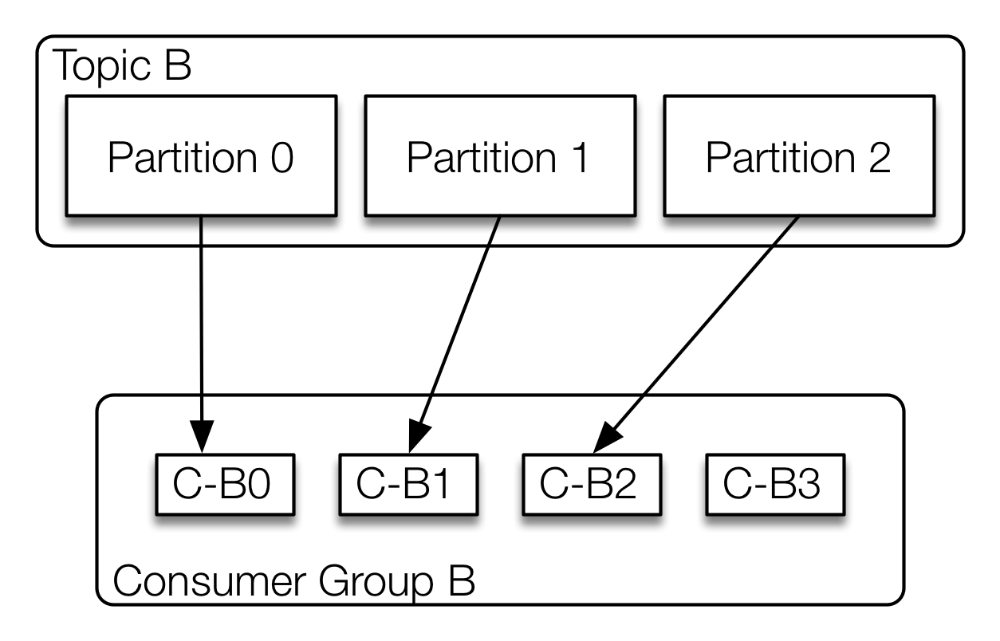
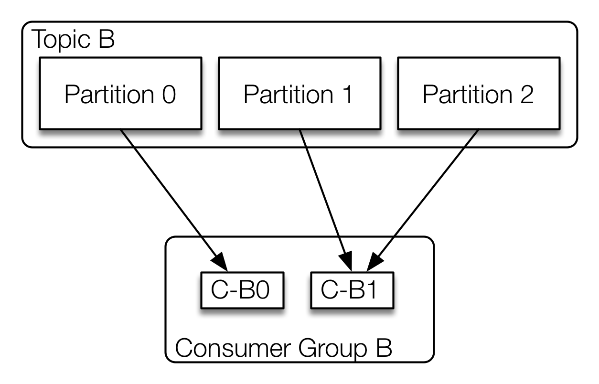

JAX 2016
Kafka 101 Massive Datenströme
Frank Wisniewski - @ultraknackig
Lars Pfannenschmidt - @leastangle
$ whoami
Frank Wisniewski
- Futsal playing Engineer @Intuit
- Event-Driven & Real Time Applications
- @ultraknackig
Lars Pfannenschmidt
- Real Time Data Products @Intuit
- Founder of @mobilecgn User Group
- @leastangle
$ ls -al
- Motivation
- Concepts
- Topics & Partitions
- Offset Management
- Log Compaction
- Quotas
- Example
- Producer
- Consumer
- Performance
- Operations
- Summary
Motivation
Chaos
 „The Log: What every software engineer should know about realtime data's unifying abstraction“ by Jay Kreps
„The Log: What every software engineer should know about realtime data's unifying abstraction“ by Jay Kreps
Order
 „The Log: What every software engineer should know about realtime data's unifying abstraction“ by Jay Kreps
„The Log: What every software engineer should know about realtime data's unifying abstraction“ by Jay Kreps
Required Guarantees
- low latency
- scalable
- fault-tolerant
"None were built like a modern distributed system that you could safely dump all the data of a growing company into and scale along with your needs."
Concepts
Overview
 Topological Overview according to Kafka documentation
Topological Overview according to Kafka documentation
Topics & Partitions
 Anatomy of a topic according to Kafka documentation
Anatomy of a topic according to Kafka documentation
Guarantees
- Messages sent to a partition will be appended in the order they are seen
- Consumer see messages in the order they are stored in the log
- Kafka will tolerate up to
n-1server failures for a topic with replication factorn
Log Compaction
Log compaction according to Kafka documentationQuotas
-
Set Broker default (in bytes/sec)
quota.producer.default=10485760 quota.consumer.default=10485760 -
Custom quotas per client
$ kafka-configs.sh --zookeeper 127.0.0.1:2181 --alter --add-config 'producer_byte_rate=4096,consumer_byte_rate=4096' --entity-name client123 --entity-type clients
Don't forget to set the client id :)
Java Producer
public class News {
public final UUID id;
public final String author, title, body;
...
}
Properties config = new Properties();
config.put(ProducerConfig.CLIENT_ID_CONFIG, "NewsProducer");
config.put(ProducerConfig.BOOTSTRAP_SERVERS_CONFIG, broker);
config.put(ProducerConfig.KEY_SERIALIZER_CLASS_CONFIG, StringSerializer.class.getName());
config.put(ProducerConfig.VALUE_SERIALIZER_CLASS_CONFIG, NewsSerializer.class.getName());
KafkaProducer<String, News> producer = new KafkaProducer<>(config);
public RecordMetadata send(News news) throws ExecutionException, InterruptedException {
ProducerRecord<String, News> record = new ProducerRecord<>(topic, news.id.toString(), news);
Future<RecordMetadata> recordMetadataFuture = this.producer.send(record);
return recordMetadataFuture.get();
}
Message Distribution
Message routing to target partition viaProducerRecord-
Round Robin
ProducerRecord(String topic, V value); -
Via
keyhash (murmur2)ProducerRecord(String topic, K key, V value); -
Via specific partition
ProducerRecord(String topic, Integer partition, K key, V value);
Consumer Lifecycle
- Topic Subscription & Partition Assignment
- Message Polling
- Partition Rebalance Handling
- Offset Management
- Shutdown
Consumer Groups
 “Kafka 101 - Massive Datenströme mit Apache Kafka” by Pfannenschmidt and Wisniewski, JavaMagazin 08.2015, p. 38
“Kafka 101 - Massive Datenströme mit Apache Kafka” by Pfannenschmidt and Wisniewski, JavaMagazin 08.2015, p. 38
Partition Assignment
Partition Assignment
 Assignment algorithm configurable via consumer parameterpartition.assignment.strategy
Java Consumer
public SimpleConsumer(String bootstrapServers, String groupId, NewsConsumer consumer) {
this.bootstrapServers = bootstrapServers;
...
this.name = String.format("%s[%s]", groupId, CONSUMER_SEQUENCE.getAndIncrement());
}
public interface NewsConsumer<News> {
void consume(News message);
String getTopic();
}
private Consumer<String, News> createConsumer() {
Properties props = new Properties();
props.put(BOOTSTRAP_SERVERS_CONFIG, bootstrapServers); // list of broker nodes
props.put(GROUP_ID_CONFIG, groupId); // identifies consumer group
props.put(AUTO_OFFSET_RESET_CONFIG, "earliest"); // fallback beahaviour on invalid offset
props.put(ENABLE_AUTO_COMMIT_CONFIG, true); // turn on auto-commit (default)
props.put(KEY_DESERIALIZER_CLASS_CONFIG, StringDeserializer.class);
props.put(VALUE_DESERIALIZER_CLASS_CONFIG, NewsDeserializer.class);
props.put(CLIENT_ID_CONFIG, getClientId());
return new KafkaConsumer<>(props);
}
Java Consumer run()
@Override
public void run() {
try {
Thread.currentThread().setName(name);
consumer = createConsumer();
consumer.subscribe(Arrays.asList(newsConsumer.getTopic()));
logger.info("Started consumer thread {}", name);
while (running) {
ConsumerRecords<String, News> records = consumer.poll(POLLING_TIMEOUT_MS);
records.forEach(record -> relayMessage(record));
}
} catch (Exception ex) {
logger.error("Started consumer thread", ex);
} finally {
close();
}
}
private void relayMessage(ConsumerRecord<String, News> kafkaRecord) {
logger.info("Received message with key '{}' and offset '{}' on partition '{}' for topic '{}'",
kafkaRecord.key(), kafkaRecord.offset(), kafkaRecord.partition(), kafkaRecord.topic());
newsConsumer.consume(kafkaRecord.value());
}
Consumer Pool
public void start(List<NewsConsumer> newsConsumers) {
pool = Executors.newFixedThreadPool(newsConsumers.size());
for (NewsConsumer newsConsumer : newsConsumers) {
SimpleConsumer consumer = new SimpleConsumer(bootstrapServers, groupId, newsConsumer);
consumers.add(consumer);
pool.submit(consumer);
}
}
public void stop() {
consumers.forEach(SimpleConsumer::stop);
if (pool != null) {
pool.shutdown();
}
logger.info("Shutdown all {} threads of consumer pool", consumers.size());
consumers.clear();
}
Performance
What makes Kafka fast?
"[Designed] to make consumption as cheap as possible"
What makes Kafka fast?
Fast Writes:
- linear writes
- all writes go to OS pagecache
Combined → Fast!
* Consumer without lag get messages from pagecache!
More Details: http://kafka.apache.org/documentation.html#persistence
sendfile()?
 Efficient data transfer according to http://www.ibm.com/developerworks/library/j-zerocopy/
Efficient data transfer according to http://www.ibm.com/developerworks/library/j-zerocopy/
Operations
Broker
-XX:+UseG1GCdefault.replication.factor=3min.insync.replicas=2 (ISR)unclean.leader.election.enable=false
Producer
acks=allblock.on.buffer.full=trueretries=Integer.MAX_VALUEmax.in.flight.requests.per.connection=1KafkaProducer.close()
Consumer
enable.auto.commit=false
Summary
Key Features & Facts
- Commit Log Topics, Partitioning, Log Compaction, Compression & Offset Management
- Real-time High-Throughput & Low-Latency
- Persistence Scalable, centralized & replicated storage
Related
- Clients Scala, Java, Python, Go, Perl, Erlang etc.
- Integration Spark, Storm, Samza, Hadoop, ElasticSearch, Logstash, Hive etc.
- Confluent Platform Schema Registry, REST Proxy & Camus
- Kafka Streams Stream processing library vs. frameworks
Thank You!
@Intuit
datanerds.io
Frank Wisniewski - @ultraknackig
Lars Pfannenschmidt - @leastangle
Attributions:
Angry Girl by Steven Depolo - Some rights reserved CC BY 2.0
Sometimes, we do puzzles... by Jameel Winter - Some rights reserved CC BY 2.0
Programming With Biscuits by fdecomite - Some rights reserved CC BY 2.0
School Time Jet Bus by Doug Wertman - Some rights reserved CC BY 2.0
Cockpit by Roger Schultz - Some rights reserved CC BY 2.0
Overflowing by Matti Mattila - Some rights reserved CC BY 2.0